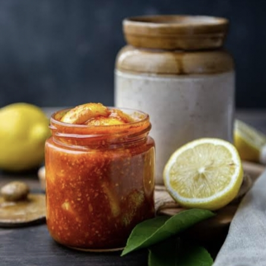

Telugu Ruchulu
తెలుగు రుచులు
LemonPickle/
నిమ్మకాయఉరగాయ
Home Page
Click to change the language
తెలుగు కోసం క్లిక్ చేయండి
Ingredients:
500g lemons (washed and dried)
3 tbsp salt (adjust as per taste)
2 tbsp red chili powder
1 tbsp turmeric powder
1 tbsp mustard seeds (coarsely ground)
1 tbsp fenugreek seeds (methi, roasted and ground)
½ cup mustard oil
1 tbsp sugar (optional, for balanced taste)

Instructions:
Prepare Lemons –
Cut lemons into small pieces, removing seeds if needed.
Mix with Salt & Turmeric –
In a bowl, mix lemon pieces with salt and turmeric. Let it sit for 2-3 days in a glass jar.
Prepare Spice Mix –
Dry roast mustard and fenugreek seeds, grind them coarsely, and mix with red chili powder.
Mix Everything –
Add the spice mix and sugar (if using) to the lemons, then pour warm mustard oil over the mixture.
Store & Ferment –
Transfer to a sterilized jar and keep it in sunlight for 10-15 days, shaking it daily for even flavor.
Tip
కావలసినవిః
500 గ్రా నిమ్మకాయలు (కడిగి ఎండబెట్టి)
3 టేబుల్ స్పూన్లు ఉప్పు
2 టేబుల్ స్పూన్లు ఎర్ర మిరప పొడి
1 టేబుల్ స్పూన్ పసుపు పొడి
1 టేబుల్ స్పూన్ ఆవాలు
1 టేబుల్ స్పూన్ మెంతి గింజలు
½ కప్పు ఆవాల నూనె
1 టేబుల్ స్పూన్ చక్కెర
నిమ్మకాయలను సిద్ధం చేయండి -
నిమ్మకాయలను చిన్న ముక్కలుగా కట్ చేసుకోండి, అవసరమైతే విత్తనాలను తొలగించండి.
ఉప్పు & పసుపుతో కలపండి -
ఒక గిన్నెలో, ఉప్పు మరియు పసుపుతో నిమ్మకాయ ముక్కలను కలపండి. ఒక గాజు కూజాలో 2-3 రోజులు నిలబడనివ్వండి
మసాలా మిక్స్ను సిద్ధం చేయండి -
ఆవాలు మరియు మెంతి గింజలను ఎండబెట్టి, వాటిని ముతకగా రుబ్బు మరియు ఎర్ర మిరపకాయతో కలపం
ప్రతిదీ కలపండి -
నిమ్మకాయలకు మసాలా మిక్స్ మరియు చక్కెర (ఉపయోగిస్తే) జోడించండి, ఆపై మిశ్రమం మీద వెచ్చని ఆవాల నూనె పోయాలి.
స్టోర్ చేయండి
కూజాకు బదిలీ చేయండి మరియు 10-15 రోజులు సూర్యరశ్మిలో ఉంచండి, ప్రతిరోజూ దానిని సువాసన కోసం కదిలించండి
చిట్కా